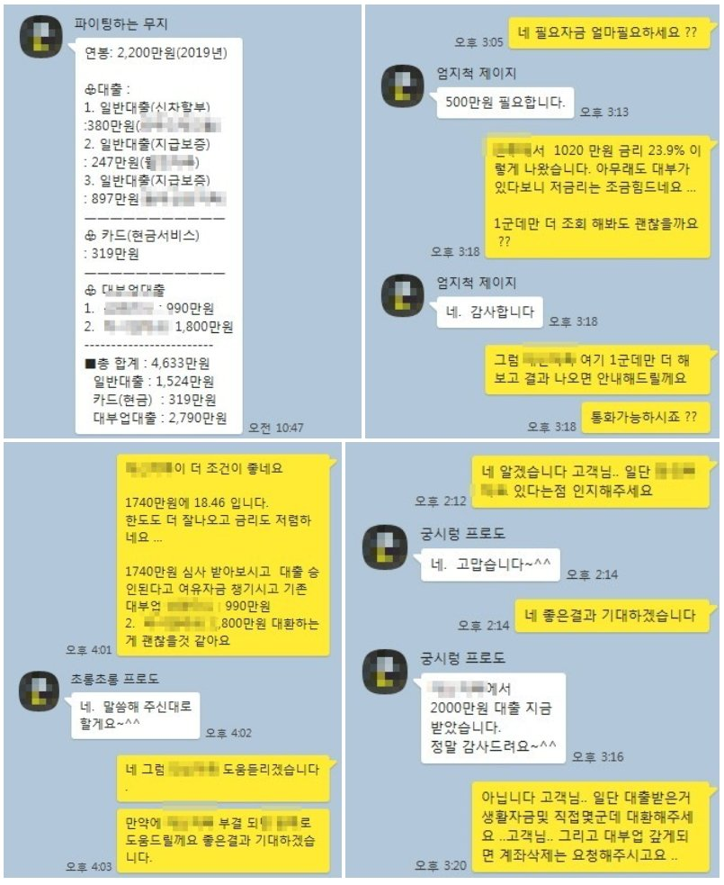

연봉대비 기대출 과다 직장인 2000만원 대출 승인사례..
안녕하세요 뱅크앤론 김한수 상담사입니다. ~ !! 5월의 마지막 31일이네요.. 이번 가정의달은 잘 보내셨나요 ??
뱅크앤론 회원분들도 가정의 편안한 만큼 이번 다가오는 6월도 행복하게 보내세요 ..^^
최근에는 회생 회복 대출을 안내해드렸는데 .. 오늘은 기대출 과다 직장인 사례를 통해 소개해 드리겠습니다.
연봉대비 기대출이 과다이지만 연체가 없이 꾸준히 잘 상환하신 고객님 사례를 통해 2000만원 대출사례를 안내하고자 합니다.
고객님 현재 연봉은 2200만원에 기대출은 카톡내용에 있듯이 차량담보대출 정부지원대출 현금서비스 대부업 2곳해서 총 4600만 가지고 있었습니다.
기대출이 많이 있었지만 신용등급6등급 가장 마지막 받은 대출이 1년정도 지나셔서.. 충분히 가능성 있다고 판단
몇군데 조회해본 결과 다른데는 부결됐지만 A금융사에서 1000만원 23.9%나왔습니다.
금리가 생각보다 높게 나와 A금융사와 비슷한 금융사로 조회해본 결과 D금융사에서 1740만원 18% 가승인이 나왔습니다. 서류를 통해 건강보험 납부확인후 금액이 증액되어 최종 2000만원 18% 금리로 고객님 도움드렸습니다.
아래는 저와 고객님 카톡내용입니다. 6월을 끝으로 법정금리가 인하됩니다. 7월부터는 금리가 내려간 만큼 대출에 대한 심사가 과거랑 달라질 거라 예상됩니다. 이번 6월달까지 금융사 심사가 완화 될 수 있습니다.
대출이 필요할때 채널및 배너통해 문의주시면 고객님들에 맞는 금융사 통해 대출 알아봐 드리겠습니다. 감사합니다. 이번 한주도 화이팅 하고 모두 행복한 6월 보내세요 ...^^
